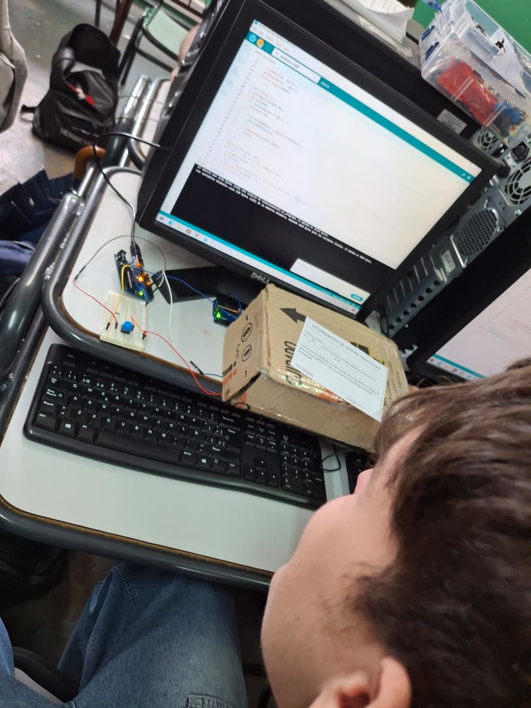

ColFi.
Comunication by Color Fidelity
Feria de Ciencias 2026 · Buenos Aires
$
Utilice las flechas para cambiar de seccion...
ver información del proyecto
// 01 — información
El Proyecto
Este proyecto demuestra un sistema básico de comunicación Col-Fi (Color Fidelity) utilizando dos placas Arduino como modelo base. La transmisión de datos se realiza mediante la encriptacion de datos en forma de tonalidades LED, mientras que la recepción se lleva a cabo con un fototransistor. A pequeña escala, funciona como ejemplo y referencia a posibles avances con respecto a esta tecnología de comunicación óptica, la cual con los recursos necesarios puede llegar a ser aun mas prometedora que conexiones ya existentes como el mismo wifi.
2
Arduinos
2
Fototransistores
2
Leds RGB
// 02 — sistema
Specs Técnicas
// flujo de comunicación
transmisor
Arduino Uno
→
emisor
LED RGB
→
canal
Luz Visible
→
receptor
Fototransistor
→
receptor
Arduino Uno
// transmisor
Arduino Uno
- Modulación de frecuencia
- Control PWM del LED
- Codificación de señal
- Protocolo Col-Fi
// emisor
LED RGB
- Alta luminosidad
- Modulación por color
- Canales R, G, B independientes
- Multiplexado óptico
// sensor
Fototransistor
- Detección de luz visible
- Alta sensibilidad óptica
- Respuesta rápida
- Filtrado de ruido
// receptor
Arduino Uno
- Decodificación de señal
- Lectura analógica
- Procesamiento en tiempo real
- Salida de datos
// 03 — archivos
Recursos & Links
// repositorio
proyect-colfi
github.com/gr1ll0o
// bibliografía
"Tecnología Col-Fi con LEDs RGB"
por Thiago Grillo
"Eficiencia"
por Ciro Lopez
// 04 — galería
Fotos del Proyecto



[ imagen no disponible ]
// 05 — créditos
¿Quiénes Somos?
E.T. "Ing. Eduardo Latzina" Nro. 35
Buenos Aires · Somos estudiantes apasionados de la informatica participando en la feria de ciencias del año 2026, cada uno de nosotros aporto a este trabajo con sus conocimientos y habilidades, esta seccion es un mero capricho de parte nuestra para poder dar a conocer a el equipo que pudo hacer de este proyecto una realidad.
[ Gr1ll0o ]
Thiago Grillo
Backend y desarrollo
[ Ruskov33 ]
Valentino Russo
Frontend e Investigacion
[]
Ciro Lopez
Ingenieria en Software
[]
Yago Sayas
Ingenieria en Hardware
[ M4rr1n ]
Lucas Marin
Investigacion y desarrollo